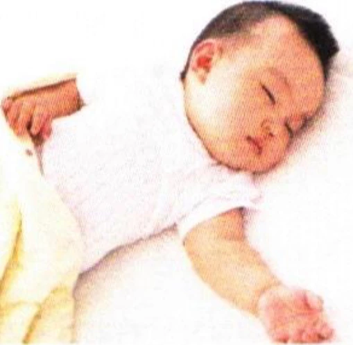
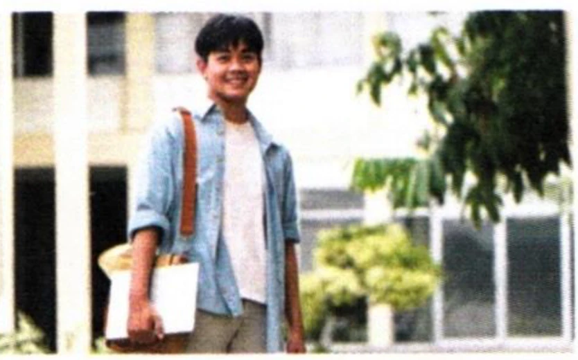
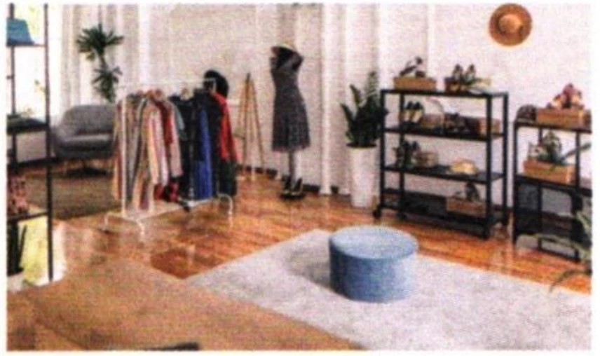

第二部分Part IIЧасть II
第4—5题：听问题，选择正确回答。每题听两次。Questions 4-5: Listen to each question and choose the correct answer. Each question will be played twice.Вопросы 4-5: Прослушайте каждый вопрос и выберите правильный ответ. Каждый вопрос будет проигран дважды.
Jīntiān tiānqì zěnmeyàng?例如： 今天天气怎么样？
How is the weather today?Какая сегодня погода?fēicháng rèA 非常热
A very hotA очень жаркоhěn hǎotīngB 很好听
B sounds beautifulB звучит красивоzài hē shuǐC 在喝水
C drinking waterC пьёт водуbù chī wǔfàn zài wàibian wán shuǐguǒ piányiA 不吃午饭 B 在外边玩 C 水果便宜
néng dào xiǎng qù ne méi dào neA 能到 B 想去呢 C 没到呢
第三部分Part IIIЧасть III
第6—8题：听对话，选择最匹配的图片。每题听两次。Questions 6-8: Listen to each dialogue and choose the correct picture. Each dialogue will be played twice.Вопросы 6-8: Прослушайте каждый диалог и выберите подходящую картинку. Каждый диалог будет проигран дважды.
A

B

C

D
079